전자산업기사 (2015-05-31 기출문제)
1과목: 전자회로
1. 다음 회로가 선형영역에서 동작하면 아래에 표현한 식들 중에서 틀린 것은?
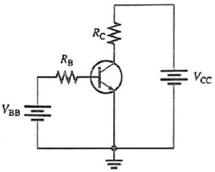
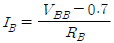
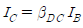
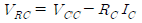
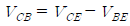
(정답률: 68%)

2. 다중 회선을 구성할 때 시분할 방식으로 하려면 어떠한 변조 방식이 적절한가?
- AM 변조
- FM 변조
- PM 변조
- 펄스 변조
(정답률: 74%)
3. 반파정류기에 60[Hz]의 정현파가 공급될 때 출력주파수 몇 [Hz]인가?
- 0
- 60
- 120
- 240
(정답률: 83%)
4. 바이어스 된 npn 트랜지스터의 베이스에 사인파 전압을 인가하였더니, 사인파 컬렉터 전압파형이 거의 0[V] 부근에서 파형이 잘려 나타나지 않았을 때, 트랜지스터의 상태는?
- 포화상태
- 차단상태
- 선형증폭
- 파괴상태
(정답률: 73%)
5. 발진상태를 유지하기 위한 귀환루프 위상 지연값은?
- 0°
- 90°
- -90°
- 207°
(정답률: 54%)
6. 다음 회로에 대한 설명으로 옳지 않은 것은?
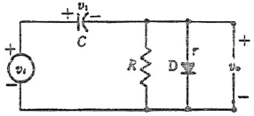
- 리미터 회로라고 한다.
- 직류재생 회로라고도 한다.
- 입력신호의 기준 레벨을 변화시키는 회로이다.
- 클램프 회로이다.
(정답률: 69%)
7. 진폭변조(AM)에서 반송파 진폭이 12[V]일 때 20[V]의 진폭을 가지는 신호파를 인가한 경우 변조도는?
- 약 0.6
- 약 0.8
- 약 1.25
- 약 1.67
(정답률: 70%)
8. RC 저역통과 여파기 회로의 차단 주파수는 약 몇 [Hz]인가?
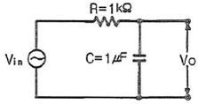
- 16
- 100
- 159
- 223
(정답률: 72%)
9. 펄스 코드 변조(pulse code modulation) 방식에 대한 설명으로 옳은 것은?
- 샘플-홀드(sample-hold) 회로를 이용한다.
- 신호파의 진폭을 양자화하여 2진법으로 표현하는 방식이다.
- 펄스의 주기, 폭은 일정하고 진폭을 입력 신호 전압에 따라 변화시키는 방식이다.
- 신호 레벨의 증감을 Δ만큼 변화되는 계단파에 근사시키고 그것을 음양의 펄스로 변환시킨다.
(정답률: 75%)
10. 귀환율
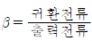
출력전류 귀환전류 로 나타내는 회로 구성은?- 직렬전류귀환회로
- 병렬전류귀환회로
- 직렬전압귀환회로
- 병렬전압귀환회로
(정답률: 64%)
11. 그림과 같은 귀환 증폭기에서 A는 '부의 실수', β는 '정의 실수'라고 한다. 귀환이 없을 때와 비교한 설명으로 틀린 것은?
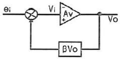
- 찌그러짐이 적어진다.
- 입력 임피던스가 증가한다.
- 대역폭이 좁아진다.
- 출력 임피던스가 감소한다.
(정답률: 70%)
12. 어떤 연산증폭기에 펄스가 입력되었을 때 0.6[μs] 동안 출력 전압이 -9[V]에서 +9[V]까지 변하였을 때 슬루율(slew rate)은?
- 18[V/μs]
- 30[V/μs]
- 0.6[V/μs]
- 9[V/μs]
(정답률: 70%)
13. 다음 회로에 삼각파를 인가하였을 경우에 출력파형은?
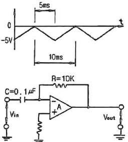
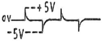
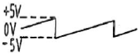
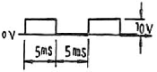
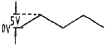
(정답률: 71%)
14. 어떤 차동 증폭기의 차동 전압 이득은 5000이며, 동상모드 이득이 0.25인 증폭기에 대한 동상 모드 제거비(CMRR)를 이용하여 데시벨[dB]로 계산하면 얼마인가?
- 약 46[dB]
- 약 62[dB]
- 약 78[dB]
- 약 86[dB]
(정답률: 68%)
15. 다음 펄스파형에 대한 설명으로 옳은 것은?
- 펄스진폭이 최종치의 90% 이후의 시간을 축적시간이라 한다.
- 펄스폭에 대한 펄스주기의 비를 첪격계수(Duty Factor)라 하며, T/tp이다.
- 펄스의 상승구간에서 높은 주파수 성분의 공진에 의한 진동을 링잉(Ringing)이라 한다.
- 비보존파형이 선형회로망을 통과하여도 출력파형이 입력파형과 같게 되는 현상을 선형파형정형(Linear Wave Shapping)이라 한다.
(정답률: 84%)
16. 차동 증폭기에서 공통모드 제거비(CMRR)에 대한 설명으로 옳은 것은?
- 이 값이 클수록 우수한 증폭기가 된다.
- 차동 이득은 작을수록 우수한 증폭기가 된다.
- 동상 이득은 클수록 우수한 증폭기가 된다.
- 이 값이 크면 증폭기의 잡음출력이 크다.
(정답률: 80%)
17. 다음 회로에서 C=0.001[μF]이고, R=30[kΩ]를 갖는 발진기의 발진 주파수는? (단, R1과 R2는 발진 조건을 만족하는 값을 갖는다고 가정한다.)
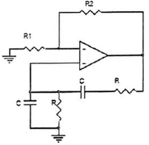
- 2.7[kHz]
- 5.3[kHz]
- 11.2[kHz]
- 16.5[kHz]
(정답률: 57%)
18. 푸시풀(push-pull) 전력 증폭기에서 출력파형의 찌그러짐이 작아지는 주요 이유는?
- 홀수열 고조파가 상쇄되기 때문
- 짝수열 고조파가 상쇄되기 때문
- 홀수열 및 짝수열 고조파가 상쇄되기 때문
- 직류 성분이 없어지기 때문
(정답률: 81%)
19. 트랜지스터 증폭회로의 설명으로 틀린 것은?
- 베이스 접지회로의 입력은 이미터이다.
- 이미터 접지회로의 출력은 베이스이다.
- 컬렉터 접지회로의 입력은 베이스이다.
- 컬렉터 접지회로의 출력은 이미터이다.
(정답률: 72%)
20. 정귀환을 하는 회로로 묶인 것은?
- 슈미트 트리거회로, 발진회로
- 미분회로, 적분회로
- 슈미트 트리거회로, 미분회로
- 발진회로, 적분회로
(정답률: 84%)
2과목: 전기자기학 및 회로이론
21. 서로 같은 방향으로 전류가 흐르고 있는 나란한 두 도선 사이에는 어떤 힘이 작용하는가?
- 서로 미는 힘
- 서로 당기는 힘
- 회전하는 힘
- 하나는 밀고, 하나는 당기는 힘
(정답률: 72%)
22. 다음에 제시한 것 중 크기와 방향으로 결정되는 물리량이 아닌 것은?
- 변위
- 전계
- 자계
- 속력
(정답률: 75%)
23. 유전율 ε(F/m), 고유저항 ρ(Ωㆍm)의 유전체로 채운 정전용량 C(F)의 콘덴서에 전압 V(V)를 가할 때 유전체 중에 발생하는 열량은 시간 t초 간에 몇 cal가 되겠는가?
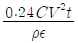
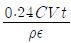
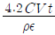
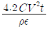
(정답률: 67%)
24. 비유전율이 5인 등방 유전체의 한 점에서의 전계의 세기가 105(V/m)일 때, 이 점의 분극의 세기는 몇 [C/m2]인가?
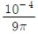
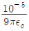
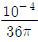
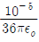
(정답률: 53%)
25. 전자유도에 의하여 생기는 기전력은 자속변화를 방해하는 방향의 전류를 생기게 하는 방향을 갖는다. 이것을 무슨 법칙이라 하는가?
- 렌츠의 법칙
- 노이만의 법칙
- 패러데이의 법칙
- 암페어의 오른손 법칙
(정답률: 60%)
26. 접지 구도체와 점전하 간에는 어떤 힘이 작용하는가?
- 항상 0이다.
- 조건적 반발력 또는 흡인력이다.
- 항상 반발력이다.
- 항상 흡인력이다.
(정답률: 74%)
27. 전류 I(A)가 반지름 a(m)의 원주를 균일하게 흐를때 원주 내부의 중심에서 r(m) 떨어진 원주 내부점의 자계의 세기는 몇 [AT/m]인가?
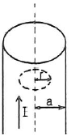
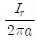
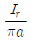
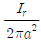
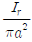
(정답률: 61%)
28. 투자율은 같고 유전율이 다른 매질이 경계면에서 전자파의 경계조건에 대한 설명 중 옳지 않은 것은?
- 경계면에서의 전계의 접선성분이 연속적이다.
- 경계면에서의 전속의 법선성분은 연속적이다.
- 경계면에서의 전계의 법선성분은 연속적이다.
- 경계면에서의 전속의 접선성분은 불연속적이다.
(정답률: 61%)
29. 동일한 금속을 접속하여 온도 차가 있을 때 전류를 흘리면 열의 발생 또는 흡수가 일어나는 현상은?
- 볼타효과
- 펠티에효과
- 톰슨효과
- 제백효과
(정답률: 58%)
30. 자기 인덕턴스를 계산하는 공식이 아닌 것은? (단, A는 벡터 퍼텐셜(Wb/m)이고, J는 전류밀도(A/m3)이다.)
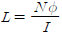
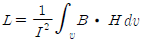
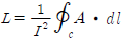
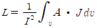
(정답률: 73%)
31. 2단자망의 임피던스Z(S)는? (단, S=jω이다.)
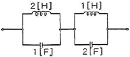
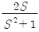
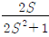
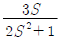
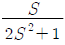
(정답률: 61%)
32. 100[mH]인 코일에 100[V], 60[Hz]의 교류전압을 인가했을 때 코일의 유도성 리액턴스의 값은?
- 37.69[H]
- 37.69[Ω]
- 68.25[H]
- 68.25[Ω]
(정답률: 66%)
33. T형 4단자 회로망의 4단자 정수(ABCD 파라미터) 중 B는?
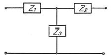
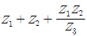
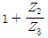
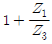
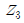
(정답률: 62%)
34. 저항 10[Ω], 인덕턴스 50[H]의 R-L 직렬회로에 100[V]의 전압을 인가하였을 때 시정수 τ[s]는?
- 0.2
- 0.8
- 1.25
- 5
(정답률: 67%)
35. 150[mH]인 자기인덕턴스 L1, L2가 감극성이 되도록 접속한 코일이 있을 때, 합성인덕턴스가 20[mH]이 되기 위한 상호인덕턴스(M)은?
- 150[mH]
- 140[mH]
- 130[mH]
- 120[mH]
(정답률: 64%)
36. 다음 그림과 같이 높이가 1인 펄스의 라플라스 변환은?
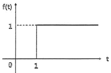
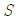
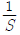
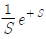
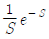
(정답률: 70%)
37. 다음 파형을 단위계단 함수로 표시할 때 S(t)는?
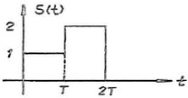
- u(t)+u(t-T)-2u(t-2T)
- u(t)+u(t-T)+2u(t-2T)
- u(t)+u(t+T)-2u(t+2T)
- u(t)+u(t+T)+2u(t+2T)
(정답률: 65%)
38. 4단자 회로망의 4단자 정수 중 출력 단락 시 역방향 전달 임피던스를 나타내는 것은?
- A
- B
- C
- D
(정답률: 67%)
39. 정현파 교류전압의 파형률은?
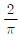
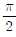
(정답률: 67%)
40. “다수 기전력을 포함하는 회로망에서의 전류분포는 각 기전력이 단독으로 그 위치에 있을 때 흐르는 전류의 총합과 서로 같다.”라고 정의한 것은?
- 키르히호프의 법칙
- 테브난의 정리
- 중첩의 원리
- 보상의 원리
(정답률: 75%)
3과목: 전자계산기일반
41. 비수치적 연산에 해당하는 것은?
- 산술 shift
- 논리 shift
- Pack 연산
- 부동 소수점 연산
(정답률: 59%)
42. 로더(loader)의 기능과 관계 없는 것은?
- allocation
- linking
- loading
- binding
(정답률: 67%)
43. 다음 보조기억장치 중 접근방식이 다른 것은?
- DVD-ROM
- Solid State Drive
- Magnetic Tape
- Hard-disk
(정답률: 68%)
44. 컴파일된 목적 프로그램은 무슨 과정을 거쳐야 수행 가능한 프로그램이 되는가?
- 디버그(debug)
- 링크(link)
- 런(run)
- 에디터(editor)
(정답률: 59%)
45. 논리회로, 누산기, 가산기, 보수기를 이용하여 구성되는 컴퓨터의 장치는?
- 입력장치
- 출력장치
- 연산장치
- 제어장치
(정답률: 81%)
46. 주소가 아닌 내용에 의해서 호출되는 방식으로 기억된 정보의 일부분을 이용하여 그 정보가 기억된 위치를 알아낸 후 그 위치에서 나머지 정보에 접근할 수 있는 특수한 기억장치를 무엇이라고 하는가?
- Cache memory
- Virtual memory
- Associative memory
- Memory interleaving
(정답률: 63%)
47. JUMP 명령문은 다음 중 어느 레지스터를 수정하는가?
- program counter
- accumulator memory
- address register
- instruction register
(정답률: 61%)
48. 부동소수점 연산에서 양의 지수 값의 최대값을 초과하여 발생하는 오류를 무엇이라고 하는가?
- 오버플로우
- 언더플로우
- 레지스터
- 큐
(정답률: 81%)
49. 자료의 크기 분류 중 가장 큰 것은?
- Field
- File
- Record
- Word
(정답률: 75%)
50. 프로그램의 기본 단위가 택할 수 있는 여러 속성 중에서 일부를 선정하여 결정하는 행위는?
- 위치(location)
- 값(value)
- 개체(entity)
- 바인딩(binding)
(정답률: 69%)
51. 10진수 -1996을 팩10진법 형식으로 표시한 것은?
- 0001 1001 1001 0110 1101
- 0001 1001 1001 0110 1111
- 0001 1001 1001 0110 1100
- 0001 1001 1001 0110 1110
(정답률: 66%)
52. 순서도를 사용할 때의 특징이 아닌 것은?
- 프로그램 코딩의 직접적인 자료가 된다.
- 프로그램의 정확성 여부를 판단하는 자료가 된다.
- 프로그램을 다른 사람에게 인수, 인계하기가 어렵다.
- 프로그램의 내용과 일 처리 순서를 한눈에 파악할 수 있다.
(정답률: 81%)
53. 불 함수 를 간략화 하면?
(정답률: 76%)
54. 주소지정방식에 대한 설명 중 틀린 것은?
- 메모리 내부의 고정된 지정 주소를 절대주소(absolute address)라고 한다.
- 상대주소(relative address)는 어느 지정된 주소를 기준으로 하여 프로그램에서 사용하는 임의의 주소를 나타낸다.
- 명령어에서 지정하는 주소를 저장하고 있는 기준 레지스터의 값을 기준주소(base address)라고 한다.
- 절대주소와 기준주소의 차이를 변위(displacement)라고 한다.
(정답률: 60%)
55. 산술연산을 위한 마이크로 동작의 연산식과 그 의미의 연결로 틀린 것은?
- A ← A+B : A에 B의 내용을 더한다.
- A ← A'+1 : A의 보수와 각 자리수에 1을 합하여 A가 된다.
- A ← A+B' : A에 B의 1의 보수를 더한다.
- A ← A-B : A에 B의 내용을 뺄셈한다.
(정답률: 62%)
56. 명령어(Instruction)의 구성 요소가 아닌 것은?
- Operation code
- Format
- Operand
- Comma
(정답률: 65%)
57. 데이터 전송에 관한 명령이 아닌 것은?
- 로드 명령(Load instruction)
- 스토어 명령(Store instruction)
- 교환 명령(Exchange instruction)
- 서브루틴 명령(Subroutine instruction)
(정답률: 67%)
58. 소프트웨어적으로 우선순위가 높은 인터럽트를 알아내는 방법은?
- 병렬 우선 순위 방식
- 폴링(polling) 방식
- 인터럽트 벡터
- 데이지 체인(daisy chain)
(정답률: 71%)
59. 다음 그림은 홀수 패리티 비트를 사용한 2진 데이터를 나타낸 것이다. 패리티 착오를 일으킨 부분은?
- ⓐ
- ⓑ
- ⓒ
- ⓓ
(정답률: 68%)
60. 객체지향프로그램(object oriented programming) 언어의 특징이 아닌 것은?
- 캡슐화(encapsulation)
- 다형성(polymorphism)
- 절차지향성(procedure oriented)
- 상속성(inheritance)
(정답률: 63%)
4과목: 전자계측
61. 신호 전압 대 잡음비(SNR; Signal to Noise Ratio)를 옳게 표현한 것은?
(정답률: 73%)
62. 200[V]용 직류 전압계가 있다. 내부저항은 18[kΩ]이고 이 전압계를 직류 600[V]용으로 사용하려면 몇 [kΩ]의 직렬저항이 필요한가?
- 72[kΩ]
- 36[kΩ]
- 12[kΩ]
- 2[kΩ]
(정답률: 73%)
63. 적산전력계의 구성 3요소가 아닌 것은?
- 회전부 제동장치
- 온도보상장치
- 계량장치
- 구동장치
(정답률: 76%)
64. 고저항이나 절연저항 측정에 많이 사용되는 메거는 어떤 눈금에 가깝도록 되어 있나?
- 대수눈금
- 평등눈금
- 대각선눈금
- 불평등눈금
(정답률: 68%)
65. 계수형 주파수계의 구성에서 필요하지 않는 것은?
- 증폭회로
- 수정발진회로
- 게이트회로
- 검파회로
(정답률: 46%)
66. 트리거 스위프식 오실로스코프의 회로구성에서 □ 안에 알맞은 것은?
- 적분회로
- 트리거회로
- 차동증폭회로
- 입력절환회로
(정답률: 74%)
67. 100[Ω] 정도의 중저항 측정에 가장 알맞은 측정 방법은?
- 전위차계법
- 맥스웰 브리지
- 휘스톤 브리지법
- 캘빈더블 브리지법
(정답률: 64%)
68. 전하 Q의 단위를 차원식으로 나타낸 것으로 옳은 것은?
(정답률: 57%)
69. 디지털 계기의 특성으로 틀린 것은?
- 고정도의 측정이 가능하다.
- 측정 결과를 읽을 때 개인 오차가 적다.
- 프린터에 의한 출력 보존 및 데이터의 기록 등을 할 수가 있다.
- 마이크로컴퓨터와의 병용으로 데이터를 처리하거나 외부에 전송할 수 없다.
(정답률: 78%)
70. 어떤 값을 측정 하였더니 측정값 M=10.24일 때 참값 T=10이라 하면 보정율은 약 얼마인가?
- -0.24
- -20.24
- -0.023
- +0.23
(정답률: 66%)
71. 헤테로다인(heterodyne) 주파수계의 교정 방법으로 틀린 것은?
- 표준 전파로 교정하는 방법
- 보간 발진기를 사용하는 방법
- 2중 비트(double beat)를 사용하는 방법
- 수정 발진기를 직접 비트(beat)시키는 방법
(정답률: 59%)
72. 다음 중 계측기의 구비 조건이 아닌 것은?
- 응답도가 높을 것
- 절연 및 내구력이 높을 것
- 확도가 높고 오차가 적을 것
- 눈금이 균등하거나 비대수 눈금일 것
(정답률: 73%)
73. 교류 브리지의 자기 인덕턴스를 측정하는데 사용되는 교류 전원의 주파수는?
- 10 - 100Hz
- 100 - 1kHz
- 1kHz - 10kHz
- 10kHz - 100kHz
(정답률: 65%)
74. 바레터(barretter)를 이용한 볼로미터(bolometer) 전력계의 설명으로 틀린 것은?
- 바레터는 금속 산화물 반도체이다.
- 정(+)의 온도계수를 이용한 것이다.
- 주위 온도에 대한 영향을 거의 받지 않는다.
- 마이크로파에서 표피 효과에 대한 영향이 다른 소자보다 작다.
(정답률: 61%)
75. 계량할 수 없는 불규칙적인 원인으로 생기는 오차로 실험을 반복하여 그 결과를 종합 분석하고, 통계적으로 계산하여 어느 정도 오차를 시정할 수 있는 것은?
- 우연 오차
- 계통적 오차
- 개인적인 오차
- 기기적인 오차
(정답률: 64%)
76. 다음 회로에서 검류계 전류가 0[A]일 때, 저항 X는? (단, P=1[kΩ], Q=300[Ω], R=2[kΩ]이다.)
- 150[Ω]
- 300[Ω]
- 450[Ω]
- 600[Ω]
(정답률: 71%)
77. 내부저항이 10[kΩ]인 전압계에 측정범위를 5배로 하기 위한 배율저항 R의 값은?
- 2.5[kΩ]
- 30[kΩ]
- 40[kΩ]
- 50[kΩ]
(정답률: 57%)
78. 피측정 회로로부터 전류를 전혀 흘리지 않기 때문에 회로의 부하 효과가 제거되는 정밀 전압 계측기는?
- DVM(Digital-Volt Meter)
- 휘스톤 브리지
- VOM(Volt-Ohm Meter)
- 전위차계
(정답률: 65%)
79. 오실로스코프를 사용하여 다음과 같은 리사주(Lissajous) 도형을 얻었다면, 측정대상 전압의 위상은 X축에 가한 기준위상과 얼마나 차를 나타내는가?
- 0°
- 45°
- 60°
- 90°
(정답률: 71%)
80. 정전형 전압계의 용량을 C1, 외부에 접속하는 콘덴서의 용량 C2 =1/4C1일 때, 측정 범위를 몇 배로 확대할 수 있는가? (단, 정전형 전압계의 측정범위를 확대하기 위하여 C2라는 콘덴서를 직렬로 접속.)
- 5배
- 10배
- 50배
- 100배
(정답률: 55%)